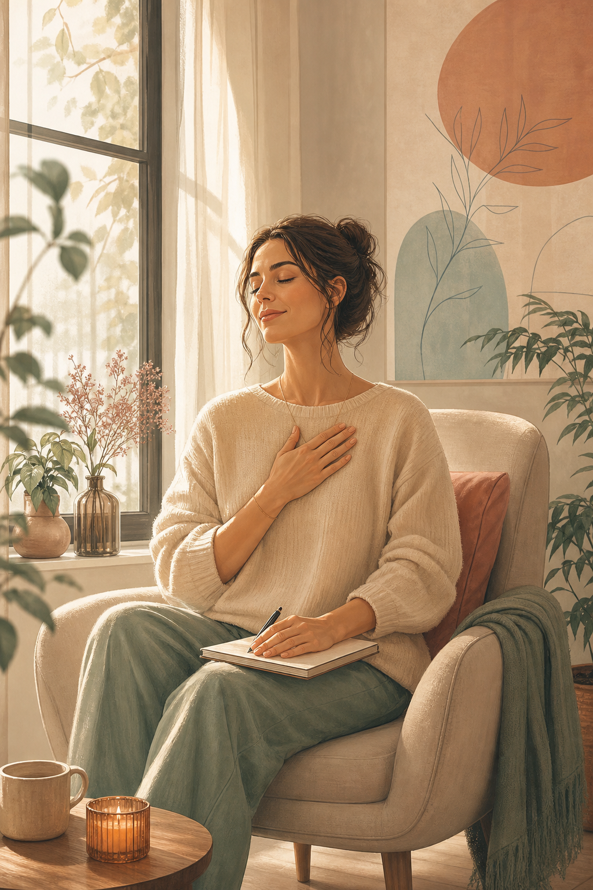
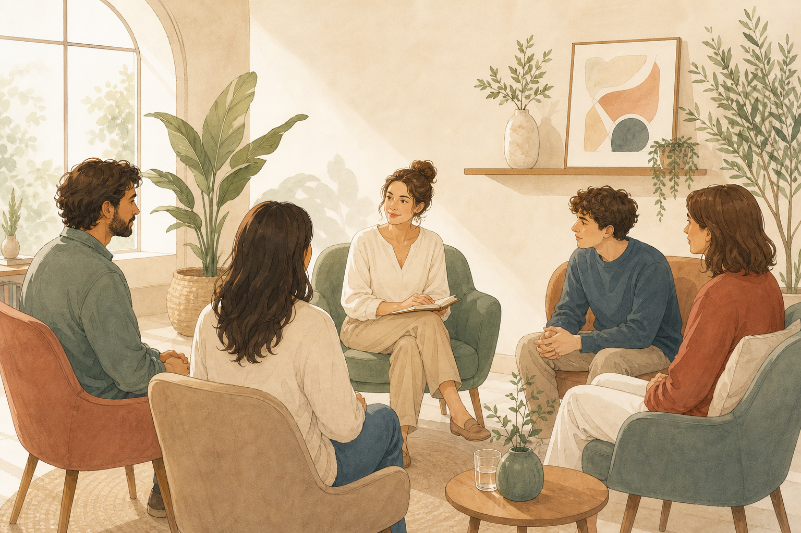

Ansiedad y regulación emocional
Manejo de síntomas, afrontamiento, prevención de recaídas, consumo de sustancias y recuperación de funcionalidad.
Psicología sanitaria en Málaga
Un espacio para apagar el ruido, comprender tu malestar y recuperar una relación más consciente contigo, con los demás y con la tecnología.

Desconectar para volver
En Redesconecta trabajamos con ansiedad, autoestima, regulación emocional, TCA, imagen corporal, consumo de sustancias y dificultades asociadas a la hiperconexión.
No buscamos solo reducir síntomas. Queremos ayudarte a entender qué función tiene tu malestar, qué patrones lo mantienen y qué recursos puedes construir para vivir con más autonomía.
Áreas de trabajo
Cada proceso se diseña tras una evaluación inicial. Integramos terapia individual, trabajo familiar, grupos, mindfulness y psicoeducación según lo que necesite cada persona.
Manejo de síntomas, afrontamiento, prevención de recaídas, consumo de sustancias y recuperación de funcionalidad.
Intervención en dificultades alimentarias, autoexigencia, comparación social, presión corporal y valoración personal.
Uso problemático de móvil, redes sociales, videojuegos, apuestas online y dependencia de la comparación constante.
Límites, comunicación, dificultades emocionales y conductuales, pantallas, presión académica y acompañamiento parental.
Prácticas para parar, escucharte y desarrollar una relación más amable con tus emociones, tus límites y tu cuerpo.

Terapia, grupos y talleres
La terapia individual puede complementarse con grupos terapéuticos, orientación familiar y talleres preventivos para colegios y familias.
Método
Trabajamos con cita previa, consentimiento informado y una evaluación inicial que permite definir objetivos terapéuticos realistas.
Escuchamos tu demanda, aclaramos expectativas y valoramos qué formato encaja mejor con tu situación.
Recogemos información relevante sobre tu historia, contexto, relaciones, hábitos y momento vital.
Definimos objetivos, ritmo de trabajo y herramientas concretas para que el proceso tenga dirección.
Revisamos la evolución del caso en equipo y ajustamos la intervención cuando es necesario.
Equipo
El equipo se coordina y supervisa internamente para ofrecer un acompañamiento cercano, personalizado y coherente.
Mindfulness, autocompasión y nuevas tecnologías
Uso problemático de redes sociales, móvil, videojuegos y bienestar digital.
TCA, autoestima e imagen corporal
Prevención e intervención en dificultades relacionadas con alimentación, autoimagen y valoración personal.
Ansiedad y regulación emocional
Ansiedad, consumo de sustancias, prevención de recaídas y manejo emocional.
Cita previa
Un primer encuentro sirve para ordenar lo que ocurre, valorar necesidades y dibujar un plan terapéutico ajustado a tu vida real.